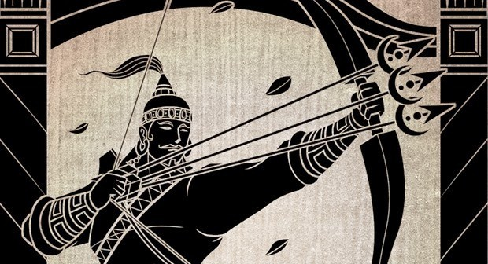
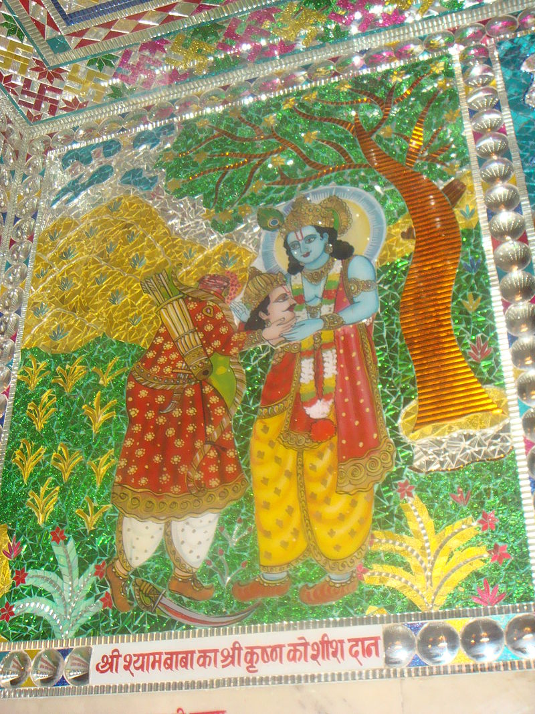

|  |
 |
Mahabharatha is filled with motivating personalities like Krishna,Arjuna,Bhishma,Karna etc.Each personality teaching a way of life.One such great unsung hero of the Mahabharatha was 'Barbarika'.Let us know about him in this story.
To start with,Barbarika was the son of Ghatothkach and the grandson of Bheema,the second pandava. Even in his childhood, Barbarika was a very brave warrior. He learnt the art of warfare from his mother. The gods (ashtadeva) gave him the three infallible arrows.Hence, Barbarika came to be known as "Bearer of Three Arrows". When Barbarika learnt that battle between the Pandavas and the Kauravas had become inevitable, he wanted to witness what was to be the Mahābhārata War. He promised his mother that if he felt the urge to participate in the battle, he would join the side which would be losing. He rode to the field on his Blue Horse equipped with his three arrows and bow.
Before the Mahabharata war began, Lord Krishna asked all the Pandavas how many days he would take to finish Mahabharata war alone. Bhishma answered that he would take 20 days to finish the war. Dronacharya replied that it would take him 26 days. When Karna was asked, he said he would take 27 days. Arjuna told Krishna it would take 28 day for him to complete the battle by himself. In this manner, Lord Krishna asked each warrior and received an answer.
Krishna disguised as a Brahmin stopped Barbarika to examine his strength. When asked how many days he would take to finish the war alone, Barbarika answered that he could finish it in one minute. Krishna baited Barbarika by mocking him for going to the great battle with only three arrows. On this, Barbarika replied that a single arrow was enough to destroy all his opponents in the war, and it would then return to his quiver. He stated that, the first arrow is used to mark all the things that he wants to destroy. If he uses the second arrow, then the second arrow will mark all the things that he wants to save. On using the third arrow, it will destroy all the things that are not marked and then return to his quiver. In other words, with one arrow he can fix all his targets and with the other he can destroy them.
Krishna then challenges him to tie all the leaves of the peepal tree under which he was standing, with those arrows. Barbarika accepts the challenge and starts meditating to release his arrow by closing his eyes. Then, Krishna without the knowledge of Barbarika, plucks one leaf from the tree and puts it under his foot. When Barbarika releases his first arrow, it marks all the leaves of the tree and finally starts revolving around the leg of Krishna. Krishna asks Barbarika why was the arrow revolving around his foot.Barbarika replies that there must be a leaf under his foot and the arrow was targeting his foot to mark the leaf that is hidden underneath. Barbarika advises Krishna to lift his leg, since, otherwise the arrow would mark the leaf by pricking Krishna's foot. Thus, Krishna lifts his foot and to his surprise, finds that the first arrow also marks the leaf that was hidden under his foot. Of course, the third arrow does collect all the leaves (including the one under Krishna's foot) and ties them together. By this Krishna concludes that the arrows are so powerful and infallible, that even if Barbarika is not aware of his targets,they can still navigate and trace all his intended targets. The moral of this incident is that, in a real battle field, if Krishna wants to isolate someone (for example: the 5 Pandava brothers) and hides them elsewhere in order to avoid them from being Barbarika's victim, he would not be successful as the arrows could trace even the hidden targets and destroy them. So, nobody would be able to escape from these arrows. Thus Krishna gets a deeper insight about Barbarika's phenomenal power.
Krishna then asks the boy whom he would favour in the war. Barbarika reveals that he intends to fight for the side whichever is weak. As the Pandavas have only seven Akshauhini armies compared to the eleven of the Kauravas, he considers that the Pandavas are weak and hence wants to support them. But Krishna asks him, if he had seriously given a thought about the consequences, before giving such a word to his mother (about supporting the weaker side). Barbarika guesses that his support to the Pandavas, which are the weaker side will make them victorious. Then, Krishna reveals the actual consequence of his word to his mother:
Krishna tells that whichever side he supports will only make the other side weaker due to his power. Nobody will be able to defeat him. Hence, he will be forced to support the other side that has become weaker (due to his word to his mother). Thus, in an actual war, he will keep oscillating between two sides, thereby destroying the entire army of both sides and eventually only he would remain. Subsequently, none of the sides would victorious as he would be the lone survivor. Hence, Krishna avoids his participation in the war by seeking his head in Charity.
Barbarika was shocked. Perceiving that all was not as it appeared, he requested the Brahmin to disclose his real identity. Krishna showed Barbarika a vision of His Divine Form and Barbarika was thus graced. Krishna then explained to him that before a battle, the head of the bravest Kshatriya needs to be sacrificed, in order to worship/sanctify the battlefield. Krishna said that he considered Barbarika to be the bravest among Kshatriyas, and was hence asking for his head in charity. In fulfilment of his promise, and in compliance with the Krishna's command, Barbarika gave his head to him in charity.
Before decapitating himself, Barbarika told Krishna of his great desire to view the forthcoming battle and requested him to facilitate the same. Krishna agreed and placed the head on top of a hill overlooking the battlefield. From the hill, the head of Barbarika watched the entire battle.An thus also bore witness to the Bhagawad Gita from the lord himslef.
Found this story interesting???...Well do let me know....